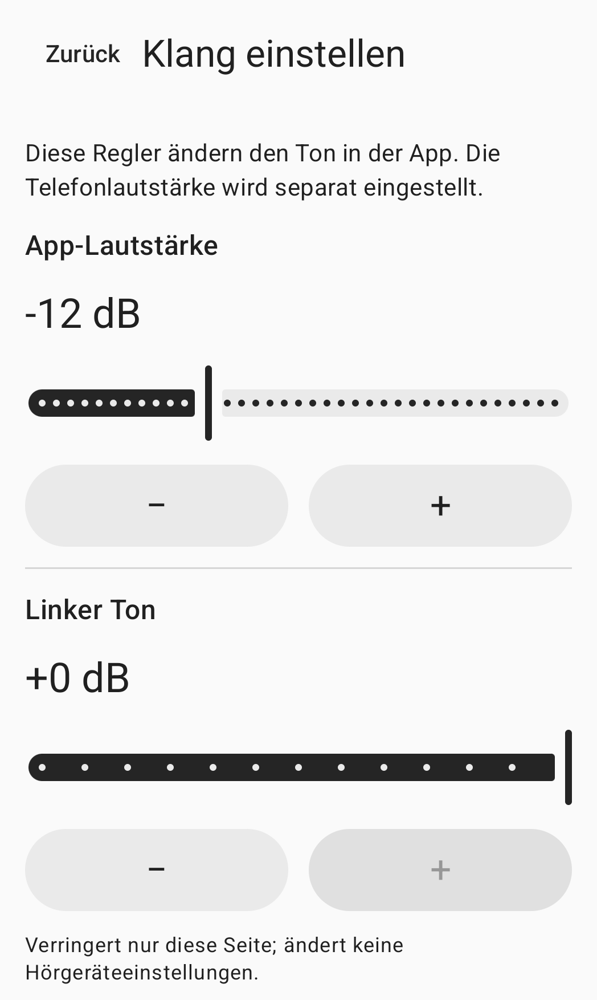

Umgebungsgeräusche manuell einstellen
Umgebungsgeräuscheselbst einstellen.
Der Ton vom Smartphone-Mikrofon,an die Kopfhörer Ihrer Wahl gesendet.Pegel, links/rechts und Klang selbst einstellen.
Anleitung ansehenNoch nicht öffentlich verfügbar.

Anleitung
Verbinden, einstellen, starten.
Verbinden
Verbinden Sie Ihre Kopfhörer mit diesem Smartphone und wählen Sie den Ausgang in der App. Standard ist Kabel oder USB. Aktivieren Sie für Bluetooth den experimentellen Modus und wählen Sie den verbundenen Ausgang selbst aus.
Einstellen
Stellen Sie App-Pegel, links/rechts und Klang ein. Die Medienlautstärke des Smartphones wird separat eingestellt. Setzen Sie Ihre Kopfhörer auf und beginnen Sie mit niedriger Lautstärke.
Starten
Erlauben Sie den Mikrofonzugriff, lesen Sie den Sitzungshinweis und tippen Sie auf die Schaltfläche zum Zustimmen und Starten. Die Berechtigung allein startet das Mikrofon nicht. Stoppen können Sie in der App oder über die Sitzungsbenachrichtigung.
Toneinstellungen
Wählen Sie Ihre Einstellungen selbst.
Die Einstellungen in der App und die Medienlautstärke des Smartphones sind voneinander unabhängig.
App-Pegel
Stellen Sie in der App den Pegel ein, der an die gewählten Kopfhörer gesendet wird. Prüfen Sie auch die Medienlautstärke des Smartphones.
Links und rechts
Verringern Sie den Pegel für jede Seite getrennt. Diese Regler ändern keine Einstellungen der Kopfhörer oder eines Hörgeräts.
Klang
Stellen Sie den Klang manuell ein. Die App nimmt keine automatische Anpassung anhand eines Hörtests vor.
Das Bild oben zeigt einen Ausschnitt der tatsächlichen Toneinstellungen. Die Regler für rechts und für den Klang sind im Ausschnitt nicht sichtbar.
Häufige Fragen
Vor dem Start
Kann ich Bluetooth-Kopfhörer verwenden?
Bluetooth ist experimentell. Verbinden Sie die Kopfhörer mit diesem Smartphone, aktivieren Sie den experimentellen Modus und wählen Sie den Ausgang selbst aus. Verzögerung und Klangqualität hängen vom Smartphone und den Kopfhörern ab.
Startet die Sitzung nach erneutem Verbinden automatisch?
Nein. Wenn der Audiopfad, der Audiofokus oder die Mikrofonberechtigung verloren geht, endet die Sitzung. Erneutes Verbinden der Kopfhörer oder Öffnen der App startet sie nicht wieder. Starten Sie die Sitzung selbst, sobald Sie bereit sind.
Was tun, wenn meine Kopfhörer nicht aufgelistet sind?
Prüfen Sie die Bluetooth-Verbindung für Medienaudio auf diesem Smartphone und aktualisieren Sie die Ausgangsliste. Weitere Hinweise finden Sie auf der Supportseite.
Wie lösche ich Aufnahmen oder App-Daten?
Die App erstellt keine Mikrofon-Aufnahmedateien. Hinweise zum Löschen von Toneinstellungen, dem Verlauf der Berechtigungsanfragen oder einem optionalen Protokoll des letzten Tests finden Sie in der Anleitung zu lokalen Daten.
Bitte vor der Nutzung lesen.
Für Erwachsene ab 18 Jahren mit normalem Hörvermögen ist HearAssist ein Werkzeug zur manuellen Einstellung von Umgebungsgeräuschen. Es dient nicht dazu, Hörverlust auszugleichen, Hörgeräte zu ersetzen, das Gehör zu testen oder Erkrankungen zu diagnostizieren oder zu behandeln.
Sprachverständlichkeit, tatsächliche Latenz und akustische Sicherheit sind nicht nachgewiesen. Vollständige Geräuschunterdrückung und Latenzfreiheit werden nicht garantiert.
Die App ist noch nicht öffentlich in App-Stores verfügbar. Diese Website bietet Produktinformationen und Support.